System¶
- SYSTEM [system type]
- Starts system block. The system type must be provided and specifies the basis upon which NECI performs a calculation. ORDER is only valid for some system types—see below.
[System options—see below.]
- ENDSYS
- End the system input block.
The available system types fall into three categories:
Read in data produced by a molecular computational chemistry package:
- READ [ORDER]
Perform a calculation on a (molecular) system based upon reading in the integrals produced by a third-party program from disk.
- GENERIC [ORDER]
Synonym for READ.
Use a model system:
- BOX
Run a calculation on electrons confined to a box. See [TwoElBox] for more details.
- HUBBARD
Run a Hubbard model calculation.
- UEG
Run a uniform electron gas calculation.
Periodic systems:
- CPMD [ORDER]
Perform a calculation based upon the Kohn–Sham wavefunctions produced by CPMD. Only available in a combined CPMD-NECI executable.
- VASP
Perform a calculation based upon the Hartree–Fock wavefunctions produced by VASP. Only available in a combined VASP-NECI executable.
- ORDER
If ORDER is specified directly after READ, GENERIC, then a quick HF calculation in the space of the orbitals is performed. The orbitals are then reordered according to the HF energies, rather than using the orbital energies read in.
If CPMD is followed by ORDER, then the CPMD orbitals are ordered, not according to their Kohn–Sham eigenvalues, but instead according to their one-electron energies (i.e. with no exchange or correlation). ORDER is not valid for any other system type.
General options¶
- BANDGAP
- Perform calculations for systems containing NEL, NEL+1, and NEL-1 electrons and extract the band gap energy.
- COULOMB [FCOUL]
- Multiply the strength of the coulomb interaction by FCOUL.
- COULOMB-DAMPING ENERGY []
- Damp the two-electron coulomb integrals, 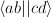 with factor where
 . A
. A  of 1 gives a damping range of 2; a of 40 gives a damping
range of 0.05.
of 1 gives a damping range of 2; a of 40 gives a damping
range of 0.05. - COULOMB-DAMPING ORBITAL [ORB ]
- Damp the coulomb integrals as above, with MU set to be halfway between the energies of ORB and ORB+1.
Note
COULOMB-DAMPING is now disabled [26/7/06].
- CSF [STOT]
Default off. Default STOT=0.
If specified, work in CSFs rather than determinants. CSFs might not function properly for some Monte Carlo, but should work for vertex sums and diagonalization. STOT is twice the magnitude of spin to restrict the resultant space.
- ELECTRONS [NEL]
- Specify the number of electrons. Required for all system types apart from CPMD- or VASP-based calculations.
- ENERGY-CUTOFF EMax
Default off.
Reject basis functions with an (unscaled) energy larger than EMax.
- EXCHANGE [ON | OFF]
Default ON.
Specify whether to include Exchange in the Slater-Condon rules. If off, we are effectively reduced to a using Hartree multi-electron wavefunctions rather than Slater determinants.
- NEL [NEL]
- Synonym for ELECTRONS.
- NOSYMMETRY
- Ignore all spatial symmetry information. This does not apply to periodic calculations.
- SPIN-RESTRICT [LMS]
- Default off. Default LMS=0. Turns spin restriction on, limiting the working space to the z-component of spin being LMS*2.
- SYM [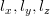 iSym]
Default off.
If specified, limit the working Slater determinant space to the set of determinants with the specified symmetry quantum numbers. The symmetry of a given orbital is specified in one of two ways:
- model system calculations:
- 3 quantum numbers, .
- molecular or periodic calculations:
- Symmetry label, iSym, which corresponds to an irreducible representation of the symmetry group.
The symmetry label(s) of each orbital is included in the output, from which the symmetry of the desired set of Slater determinants can be evaluated (albeit in a somewhat laborious manner). All four numbers are required, but only the relevant one(s) are used.
For Abelian symmetry groups, each symmetry is printed out in terms of a propogating vector. Internally an integer label is still used, according to the formula:
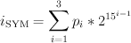where 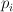 are the components of the propogating vector.
- USEBRILLOUINTHEOREM
- Apply Brillouin’s theorem: the net effect of single-excitations of the Hartree–Fock determinant coupled to the Hartree–Fock determinant is zero, so explicitly exclude such single excitations.
Read options¶
- BINARY
- Read in an unformatted FCIDUMP file containing the molecular integrals.
- DensityFitted
- Read in a set of density fitted coefficients and coulomb integrals from files SAV_DFaSOL and SAV_Ta_INT (generated by [CamCasp]). One-electron integrals are read in from HONEEL, which also contains 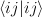 and 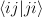 integrals (generated by readintOCC.x—a local package).
- STARSTORE [BINARY]
- Only the integrals required for a double-excitation star calculation are read in from an FCIDUMP. The one-electron integrals, which we call TMAT elements, are stored as integrals involving spatial orbitals, meaning that UHF is no longer available. In addition, only non-zero one-electron integrals i are stored. The memory required to store the coulomb integrals is massively reduced, from 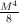 to just
, where and 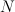 are the total number of orbitals and the number of occupied orbitals respecitvely. We only store the 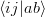 integrals in the UMAT array, where i and j are occupied, as well as the 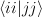 and integrals over all states in the UMAT2D array. Can only be used for the 2-vertex sum and the 2-vertex star calculations. If BINARY is also specfied, then an unformatted FCIDUMP file is used.
- STORE-AS-EXCITATIONS
- Store determinants as a 4-integer list of orbitals excited from, and orbitals excited to, in comparison to the reference determinant, rather than as an n-electron list of the occupied orbitals in the determinant. This means that the scaling is reduced to 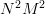 rather than 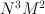, as we run through the list for each excitation. Currently only working for the 2-vertex star Fock-Partition-Lowdiag calculations.
Model system options¶
The following apply to electron in a box, Hubbard model and uniform electron gas calculations, unless otherwise noted.
- BOXSIZE [A [BOA COA] ]
Required for UEG and BOX calculations. BOA and COA optional. Default BOA=COA=1.
Set lattice constants a, b and c respectively, where b and c are defined as a ratio of a.
- CELL [NMAXX NMAXY NMAXZ]
- Maximum basis functions for each dimension. For HUBBARD and UEG, functions range from -NMAXi to NMAXi, but for BOX, they range from 1 to NMAXi, where i=X,Y,Z.
Box options¶
- ALPHA []
Sets TALPHA=.true. and defines .
Integrate out the Coulomb singularity by performing part in real space and part in Fourier space, with the division according to the screening parameter . See [TwoElBox].
- MESH [NMSH]
Default NMSH=32.
Number of mesh points used for calculating integrals.
Hubbard options¶
- B [BHUB]
Default=0.
Sets B (hopping or kinetic energy) parameter for the Hubbard model.
- U [UHUB]
Default=0.
Sets U (on-site repulsion) parameter for the Hubbard model.
- REAL
- Set Hubbard model to be in real space.
- APERIODIC
- Hubbard model is set to be not periodic.
- TILT [ITILTX ITILTY]
Default off.
The Hubbard model is tilted and the unit vectors are (x,y)=(ITILTX,ITILTY) and (-y,x). Require x y.
UEG options¶
- EXCHANGE-CUTOFF [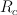]
Use the method detailed in [AttenEx] for calculating the exchange integrals.
Sets cutoff distance for the exchange electron-electron potential. If is not explicitly set, it will be set to be equivalent to a sphere of the same volume as the cell,
 .
.- EXCHANGE-DAMPING []
- Sets cutoff parameter for attenuated potential
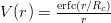. If is not explicitly set,
it will be set to be equivalent to a sphere of the same volume as the cell,
.
| [TwoElBox] | (1, 2) Two interacting electrons in a box: An exact diagonalization study, Ali Alavi, JCP 113 7735 (2000). |
| [AttenEx] | Efficient calculation of the exact exchange energy in periodic systems using a truncated Coulomb potential, James Spencer and Ali Alavi, PRB, 77 193110 (2008). |
| [CamCasp] | Cambridge package for Calculation of Anisotropic Site Properties, Alston Misquitta and Anthony Stone. http://www-stone.ch.cam.ac.uk/programs.html#Camcasp |